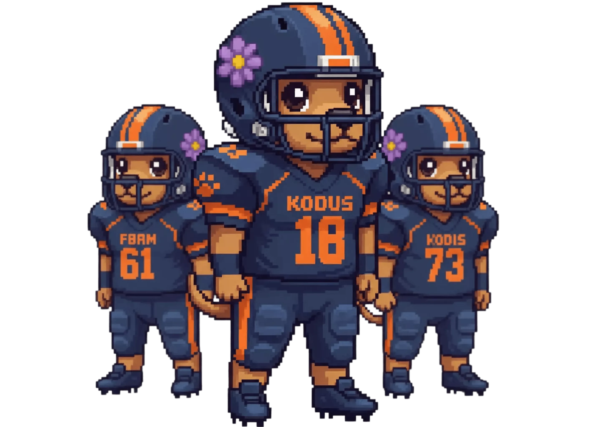

AI Review
How To Reduce PR Review Time With AI Workflows
A practical setup to cut review cycle time without increasing false positives in your pull requests.
Articles about code review, AI, and engineering productivity
A practical setup to cut review cycle time without increasing false positives in your pull requests.

What changes when you compare AI review tools using production diffs instead of toy snippets.
Patterns for creating a shared rule set that works for multiple squads and repositories.
A baseline checklist you can enforce automatically to keep vulnerabilities from reaching production.

A side-by-side analysis of signal quality, actionable feedback, and review consistency.

How to avoid noise and still use automated comments as a reliable step in your review process.
A calibration flow to improve precision while preserving coverage in large codebases.
Configuration defaults that prevent accidental exposure of sensitive code and credentials.
A model-by-model breakdown of operating costs for teams reviewing thousands of PRs per month.